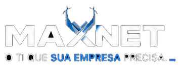
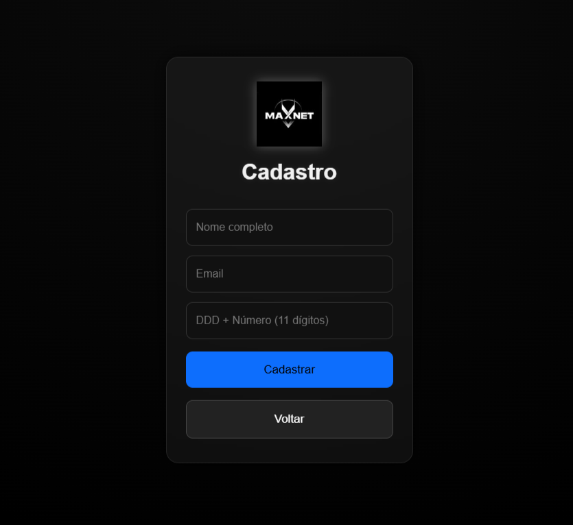
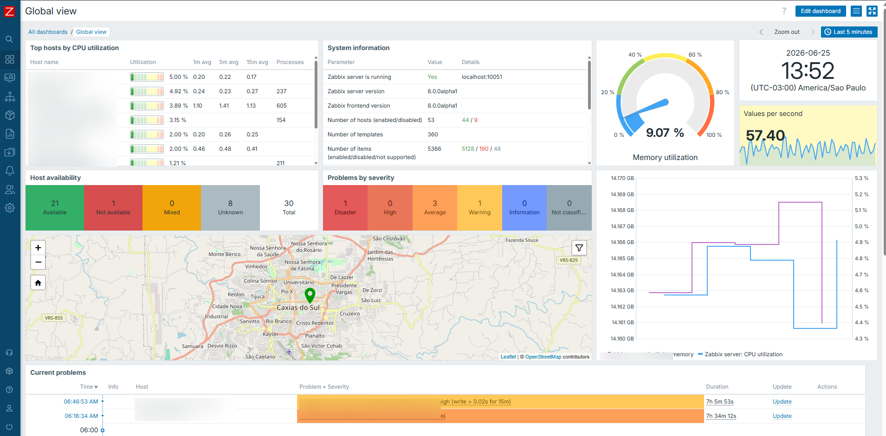
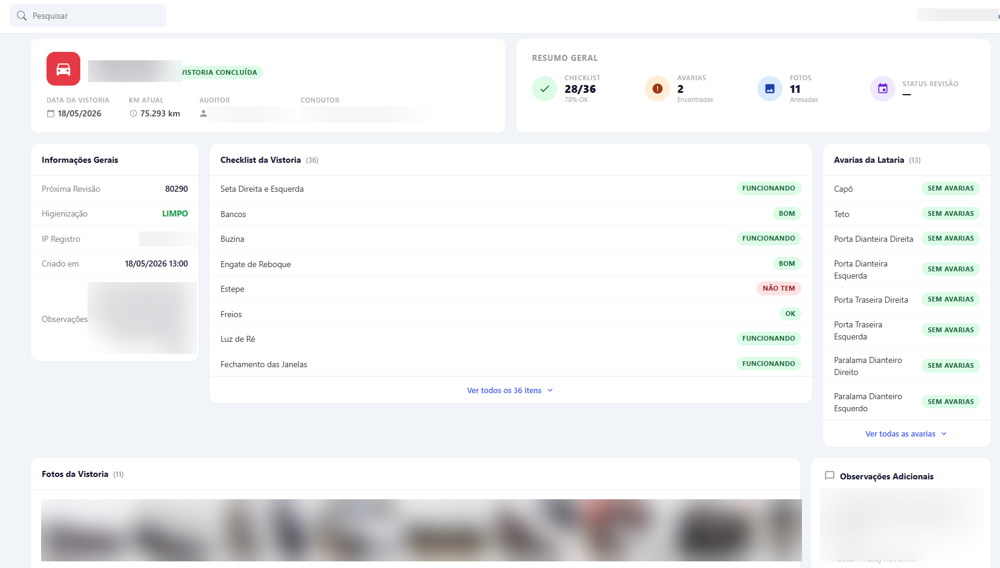

Suporte Service Desk
Atendimento para computadores, sistemas, periféricos, acessos e incidentes.

Tecnologia da Informação
A MAXNET cuida da sua operação com suporte técnico, redes, conectividade, Wi-Fi empresarial e infraestrutura planejada para não deixar sua empresa parar.
Nossas soluções
Atendimento para computadores, sistemas, periféricos, acessos e incidentes.
Cobertura, desempenho e organização da rede sem fio para ambientes profissionais.
Diagnóstico de instabilidade, melhoria de conexão e orientação técnica.
Acompanhamento da estrutura para identificar falhas antes que virem prejuízo.
Boas práticas, organização de acessos e proteção da operação.
Apoio para armazenamento, contas, backups e ferramentas conectadas.
Cabeamento, equipamentos, roteadores e estrutura para empresas em crescimento.
Planejamento, melhorias e suporte para transformar tecnologia em vantagem operacional.
Projetos e capacidades
Além do suporte e da infraestrutura, a MAXNET desenvolve soluções internas para reduzir retrabalho, centralizar informações e dar mais velocidade à operação.
Ferramentas web para controle operacional, consultas internas, registros e fluxos específicos da empresa.
Organização de documentações, manuais PDF, procedimentos e informações de suporte em um só lugar.
Processos para cálculo de horas, consultas, devoluções, disparos de e-mail e tarefas repetitivas.
Apoio em ambientes com servidores, data center, Docker, bancos de dados, e-mail e acompanhamento de serviços.
Soluções em operação

Portal de cadastro e acesso com identidade visual, fluxo simples para usuários e base pronta para integração.

Painéis para acompanhar disponibilidade, alertas, servidores, mapas e indicadores críticos da infraestrutura.

Sistema para checklist, avarias, fotos, revisões e histórico de vistoria com dados operacionais centralizados.
Atuação MAXNET
Entendemos a rotina, os pontos críticos e o que precisa ser resolvido primeiro.
Executamos melhorias com padrão, documentação e cuidado com a operação.
Atendimento próximo para reduzir paradas e manter a empresa funcionando.
Contato
Conte o que sua empresa precisa e vamos indicar o melhor caminho para organizar, estabilizar e evoluir sua estrutura de TI.